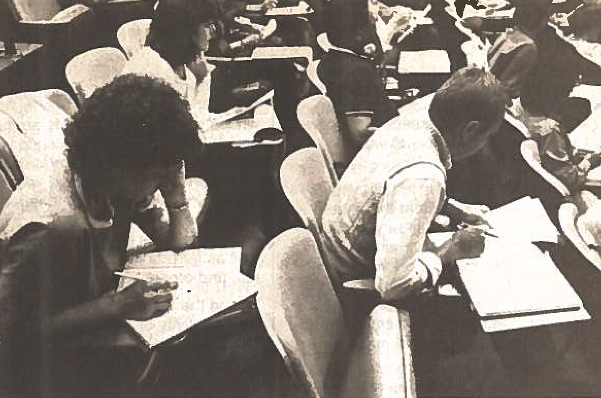
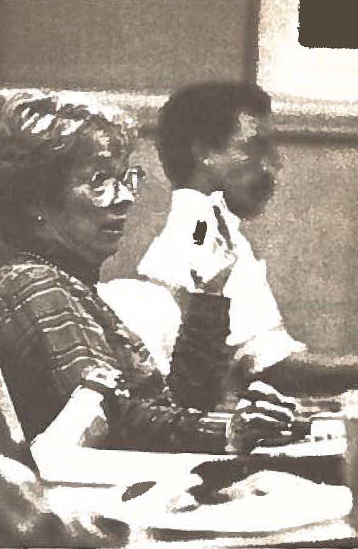
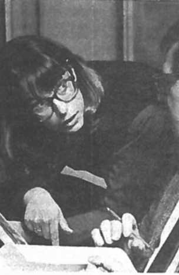
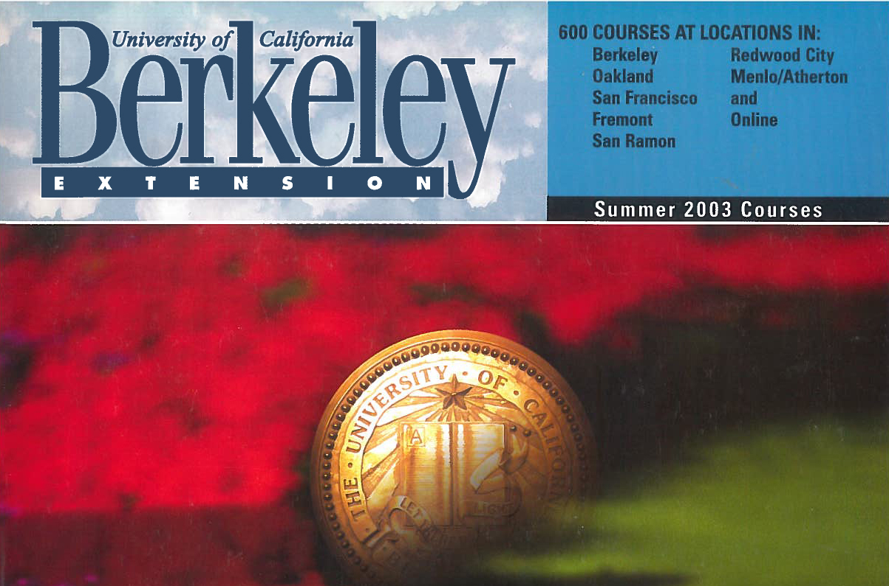
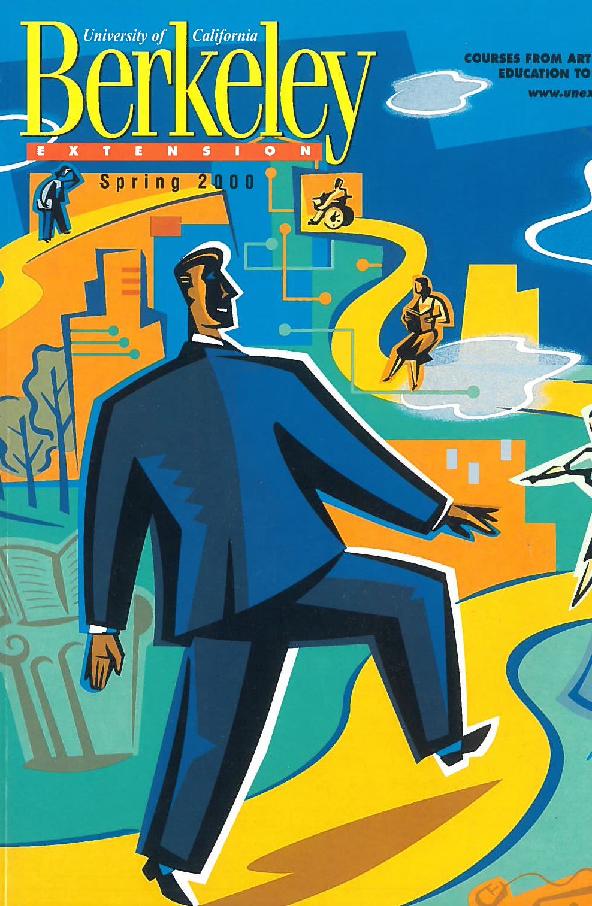
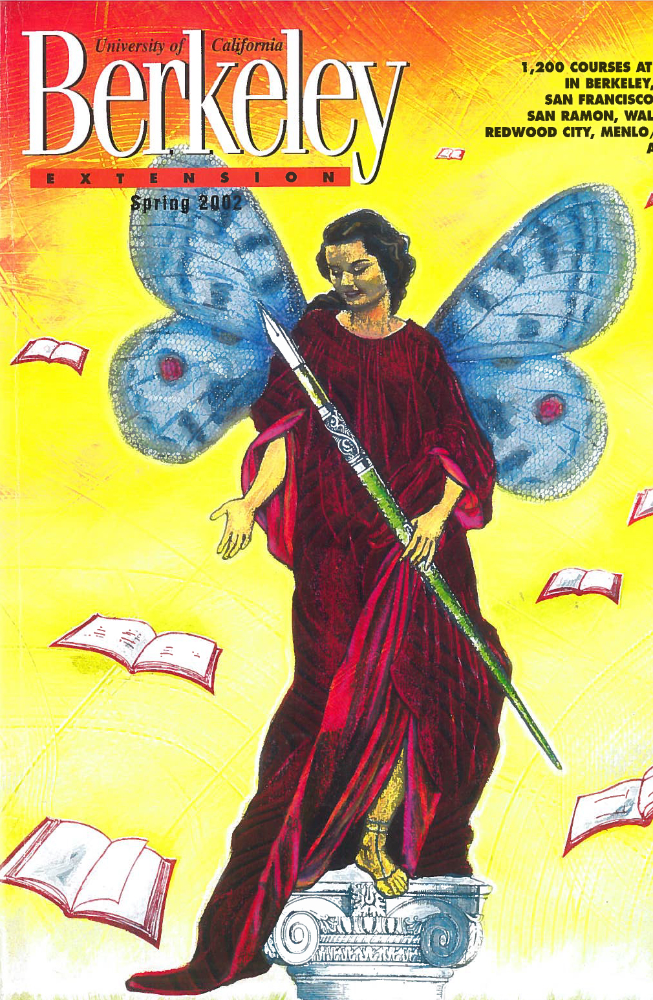

Example 1
Example 2
Example 3
Example 4
Example 5
Example 6
Example 7
Example 8
Example 9
Example 10
Example 11
Example 12

1991-2000

Following the "globalization" trend of the world’s economies and the proliferation of the internet inthe 1990s, Extension pioneered online learning after receiving a Sloan grant in 1994 to build an interactive, fully online continuing education curriculum easily accessible nationwide via a commercial carrier. The early successes in providing professionals with online courses allowed the institution and its Dean Mary S. Metz to later become a key supporter of the California state initiative to create a California Virtual University in 1998.
With the explosive growth of demand and the consequent increase in course offerings 1995, the Extension headquarter moves to its current location in the Golden Bear Building at 1995 University Ave, Berkeley. In the same year, Extension launched the ambitious ExtEN (Extension EducationalNetwork) Project, a pilot program funded in part by a grant from Pacific Bell's California Research in Education Network to explore the use of two-way video conferencing technology, allowing instructors to lecture to learners in two locations simultaneously. In 1996, 1998 and 1999, additional education centers opened in Fremont, Redwood City and downtown San Francisco, to expand access to Extension’s programs and courses to professionals in the east of the San Francisco Bay Area and on the peninsula.


2001-2010

Mirroring the economic downturn in the wake of the dot-com bubble that impacted in particular the technology industries of the Bay Area, Extension experienced declines in enrollments, particularly in its high technology programs. The decline became sharper with the deepening recession after Sept. 11 2001, which had a particularly adverse impact on international enrollments. Consequently, Extension underwent significant organizational restructuring in 2002 and gave up its historic Laguna Street campus in San Francisco 2004.
In 2005, a new downtown campus opened in the SoMA Center, while the East Bay centers in Fremont and San Ramon are closed in 2007. In 2008, Dean Diana Wu was officially appointed, a position she holds until today. In 2009, the Richmond center was moved to Belmont, to better serve learners on the peninsula.

